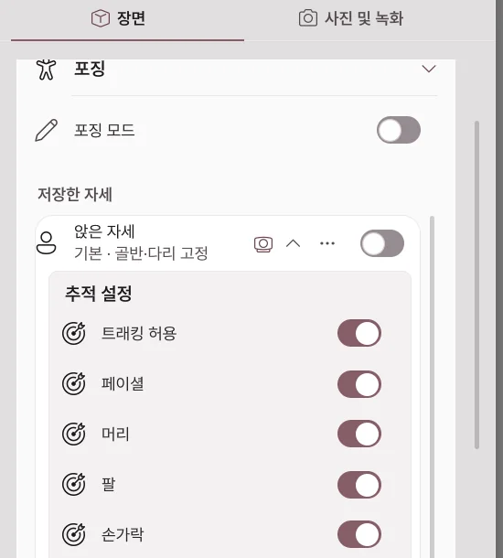
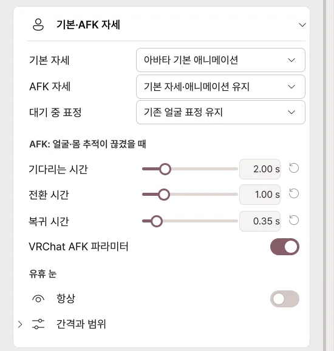
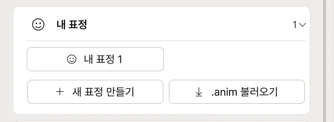
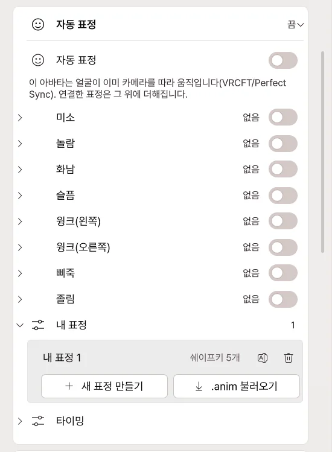

포징과 표정
저장할 자세를 만들고, 표정을 버튼이나 추적 입력에 연결합니다. 포징·포즈 라이브러리·오브젝트는 Pro, 내 표정·자동 표정은 Basic과 Pro에서 사용할 수 있습니다.
포징

- 스튜디오 → 포징에서 포징 모드를 켭니다.
- 뼈를 선택해 회전 링을 끌거나 손·발을 옮깁니다.
- 완료를 눌러 자세를 저장합니다.
- 아바타 메뉴의 자세 카드에서 적용합니다.
| 조작·버튼 | 결과 |
|---|---|
| 뼈 선택·회전 | 선택한 관절의 방향을 바꿉니다. |
| 손·발 드래그 | 팔이나 다리가 따라오도록 끝점을 옮깁니다. |
| Alt+드래그 | 팔꿈치·무릎이 향하는 쪽을 바꿉니다. |
| 대칭 편집 | 반대쪽도 함께 바꿉니다. |
| 좌우 뒤집기 | 자세의 좌우를 바꿉니다. |
| 고정 | 선택한 뼈를 추적과 애니메이션이 움직이지 못하게 합니다. |
| 바닥에 붙이기 | 발을 바닥에 맞춥니다. |
| 완료 | 만든 자세를 저장합니다. |
| 버리기 | 편집한 자세를 적용하지 않고 나갑니다. |
자세별 추적

자세 옆 카메라 버튼을 누르면 페이셜·머리·팔·손가락·몸통을 각각 켜고 끕니다.
- 켜진 부위: 내 움직임을 따라갑니다.
- 꺼진 부위: 저장한 자세를 유지합니다.
- 예: 팔을 끄고 머리·페이셜을 켜면 팔 포즈를 유지하며 고개와 표정은 움직입니다.
기본 자세와 대기 자세

| 선택 | 사용할 때 |
|---|---|
| 기본 자세 | 평소 추적하지 않는 부분의 기준 자세입니다. |
| AFK 대기 자세 | 추적을 잃었을 때 사용할 자세입니다. |
| 대기 표정 | AFK 중 자동으로 적용할 표정입니다. |
| 책상 자세 | 손이 카메라에 안 보일 때 사용할 팔·손 자세입니다. |
대기 자세로 넘어가는 시간은 동작 → 추적을 잃었을 때에서 맞춥니다.
포즈 라이브러리

- 스튜디오 → 포징 → 포즈 라이브러리를 엽니다.
.anim파일이 있는 폴더를 선택합니다.- 자세 썸네일을 고르고 적용합니다.
- 해제를 누르면 돌아옵니다.
검색·즐겨찾기로 자주 쓰는 포즈를 찾고, 편집으로 포징 모드에서 고쳐 저장할 수 있습니다.
오브젝트
스튜디오 → 방과 소품에서 배치 방법을 확인하세요. 텍스트·이미지·도형과 .vprop 3D 모델을 사용할 수 있습니다.
내 표정

- 새 표정 만들기를 누릅니다.
- 얼굴의 쉐이프키를 움직여 표정을 만듭니다.
- 미리보기 강도로 0% 무표정부터 100% 표정까지 확인합니다.
- 저장합니다.
- 내 표정 타일을 눌러 적용합니다.
.anim 불러오기로 Unity 표정 애니메이션을 추가할 수도 있습니다. 움직이는 파일은 시간에 따라 표정이 변하고, 반복 여부는 파일 설정을 따릅니다.
자동 표정

동작 → 자동 표정에서 켭니다. 미소·놀람·윙크 등 감지할 표정마다 내 표정에서 저장한 표정을 연결합니다. 그러면 실제로 웃거나 놀랄 때 연결한 표정이 자동으로 나옵니다.